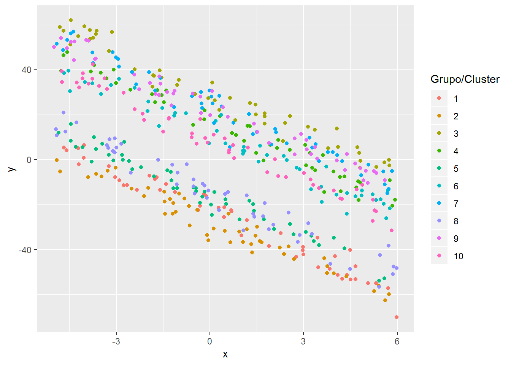
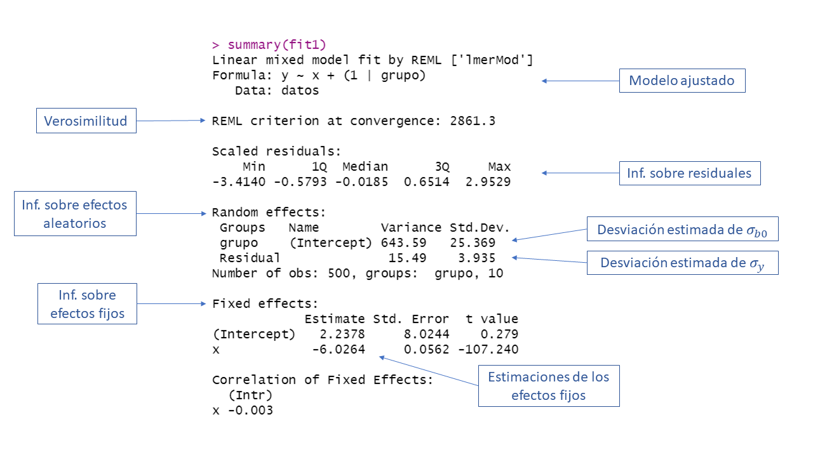

3 Paquete lme4
El paquete lme4 (Bates et al. 2019) es uno de los paquetes más completos para modelos mixtos. Al visitar este enlace se encontrará la página de apoyo del paquete, allí se puede consultar el manual de referencia y las viñetas.
3.1 Función lmer
La función lmer es la principal función del paquete (Bates et al. 2019). Esta función sirve para ajustar un modelo mixto y su estructura es la siguiente:
lmer(formula, data = NULL, REML = TRUE, control = lmerControl(),
start = NULL, verbose = 0L, subset, weights, na.action,
offset, contrasts = NULL, devFunOnly = FALSE, ...)Los principales argumentos de la función son:
formula: es una fórmula similar a la usada en el modelo lineal clásico. Un ejemplo de fórmula seríay ~ 1 + x1 + x2 + (1 + x2)con la cual se indican los efectos fijos y los efectos aleatorios del modelo. Más abajo hay una tabla con más detalles sobre la fórmula.data: marco de datos donde están las variables.
REML: valor lógico que sirve para indicar si queremos estimaciones maximizando la verosimilitud restringida o la verosimilitud usual.
La siguiente imagen corresponde a la tabla 2 de la viñeta Fitting Linear Mixed-Effects Models using lme4. En esa tabla las dos primeras columnas muestran formas equivalentes de incluir las estructuras de modelos mixtos más comunes.

Ejemplo: modelo con intercepto aleatorio
En este ejemplo vamos a simular observaciones \(ni=50\) observaciones para \(G=10\) grupos (en total 500 obs) que tengan la estructura mostrada abajo. El objetivo del ejemplo es ilustrar el uso de la función lmer para estimar los parámetros del modelo.
\[\begin{align*} y_{ij} &\sim N(\mu_{ij}, \sigma^2_y) \\ \mu_{ij} &= 4 - 6 x_{ij} + b_{0i} \\ \sigma^2_y &= 16 \\ b_{0} &\sim N(0, \sigma^2_{b0}=625) \\ x_{ij} &\sim U(-5, 6) \end{align*}\]
El vector de parámetros de este modelo es \(\boldsymbol{\Theta}=(\beta_0=4, \beta_1=-6, \sigma_y=4, \sigma_{bo}=25)^\top\).
El código para simular las 500 observaciones se muestra a continuación. Observe que se fijó la semilla en dos ocasiones para que el lector pueda replicar el ejemplo y obtener los mismos resultados.
ni <- 50
G <- 10
nobs <- ni * G
grupo <- factor(rep(x=1:G, each=ni))
obs <- rep(x=1:ni, times=G)
set.seed(1234567)
x <- runif(n=nobs, min=-5, max=6)
b0 <- rnorm(n=G, mean=0, sd=sqrt(625)) # Intercepto aleatorio
b0 <- rep(x=b0, each=ni) # El mismo intercepto aleatorio pero repetido
media <- 4 - 6 * x + b0
set.seed(123456)
y <- rnorm(n=nobs, mean=media, sd=sqrt(16))
datos <- data.frame(grupo, obs, b0, x, media, y)El siguiente paso es dibujar los datos para explorar si sería apropiado usar un modelo con intercepto aleatorio (obvio porque así se simularon los datos). El código para dibujar los datos se muestra abajo.
library(ggplot2)
ggplot(datos, aes(x, y, color=grupo) ) +
geom_point() +
labs(colour="Grupo/Cluster")
En la figura anterior se observa un patrón claro, todas las 10 nubes de puntos tienen la misma pendiente pero diferente intercepto con el eje vertical, eso se debe a que en la simulación se incluyó un \(b_0\).
Para estimar los parámetros del modelos se usa la función mler de la siguiente forma.
La función summary se puede usar sobre el objeto fit para obtener una tabla de resumen, a continuación se ilustra el uso y la salida de summary.

Según el resultado anterior \(\hat{\boldsymbol{\Theta}}=(\hat{\beta}_0=3.53363, \hat{\beta}_1=-5.97805, \hat{\sigma}_y=4.012, \hat{\sigma}_{bo}=21.507)^\top\) mientras que el vector real de parámetros es \(\boldsymbol{\Theta}=(\beta_0=4, \beta_1=-6, \sigma_y=4, \sigma_{bo}=25)^\top\).
Compare los resultados de la tabla anterior obtenida con la función lmer anterior con los resultados obtenidos con la función lme de capítulo 4.
References
Bates, Douglas, Martin Maechler, Ben Bolker, and Steven Walker. 2019. Lme4: Linear Mixed-Effects Models Using ’Eigen’ and S4. https://CRAN.R-project.org/package=lme4.